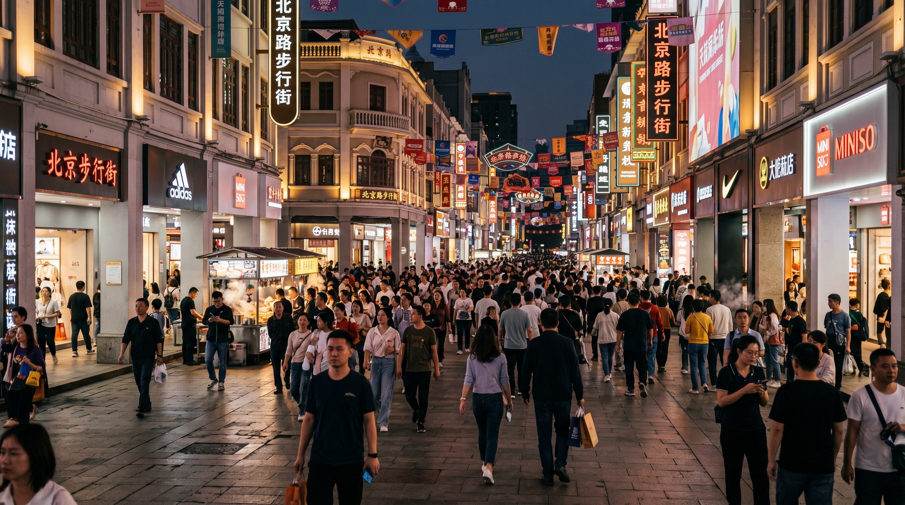
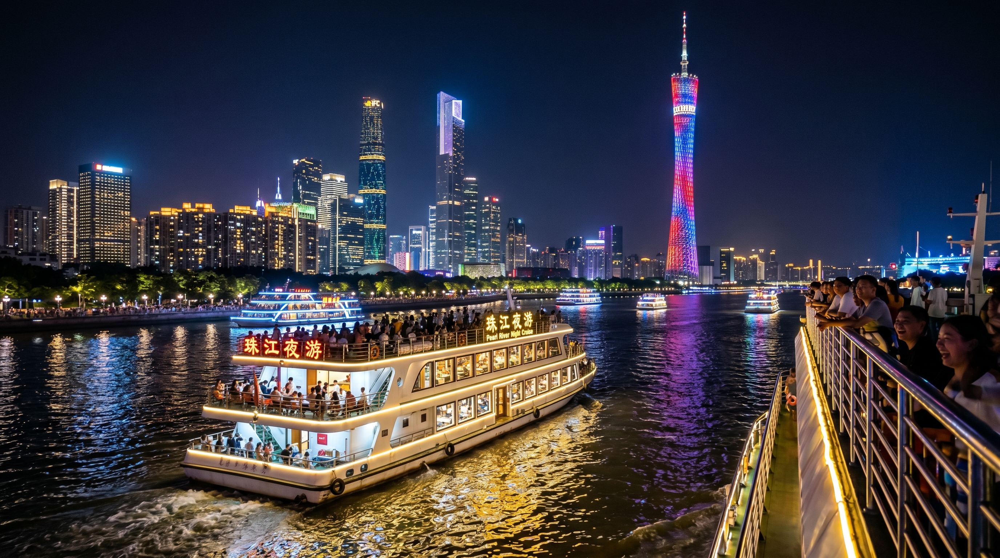

Planning a trip to Guangzhou? This comprehensive 2025 Guangzhou 3-day self-guided itinerary was created using TripMate, an intelligent trip planning tool that calculates optimal routes, walking + metro transfers down to the minute, and helps you avoid backtracking entirely. From historic Lingnan architecture and vibrant street food to modern cultural landmarks and breathtaking Pearl River night views — this itinerary perfectly balances culture, food, and relaxation.
Written by a traveler who used TripMate for a seamless, stress-free Guangzhou experience.
Guangzhou 3-Day Detailed Itinerary
Day 1: Historic Old Town & Lingnan Culture
Old Guangzhou Pedestrian Streets • Classic Architecture • Local Food Heaven

From hotel → Beijing Road Metro Station → Line 1 to Yide Road Station Exit B (21 minutes)
One of the largest remaining Gothic-style stone churches in China. The granite facade and stunning stained glass create breathtaking light effects on sunny days. Free entry (closed Mondays). Arrive early to avoid crowds and capture perfect photos of the interior dome and intricate carvings.
Opening hours: 8:30 AM – 5:30 PM (last entry 5:00 PM)
Line 1 to Changshou Road Station Exit D (total 27 minutes)
Iconic Lingnan “Qilou” arcade buildings, traditional Cantonese architecture, and time-honored restaurants like Lian Xiang Lou and Tao Tao Ju. Perfect for morning tea, souvenirs, and street photography. Must-try local snacks: Chen Tian Ji Fish Skin and Nan Xin Double-skin Milk.
Walk to Hualin Temple Station → Bus 3 to Enning Road Station (21 minutes)
Beautifully restored old Xiguan neighborhood featuring traditional Qilou buildings, Bruce Lee’s ancestral home, Cantonese Opera Museum, and the stunning Clock Bookstore. Best visited in the late afternoon when the lights come on for magical night photos.
Day 2: Beijing Road & Urban Oasis
Ancient Commerce Street • Tranquil Temple • City Park

Hotel → Beijing Road Station by bus (19 minutes)
A thousand-year-old commercial street with glass-covered archaeological windows revealing ancient road layers from Tang, Song, Ming and Qing dynasties. Great shopping and people-watching area with many time-honored restaurants.
Only 2 minutes walking from Beijing Road (TripMate optimized)
A peaceful Qing Dynasty Buddhist temple hidden in the bustling city center. Admire the grand golden Buddha statues and red walls. Try the famous affordable vegetarian noodles at the entrance.
Line 2 to Yuexiu Park Station Exit B (28 minutes total)
Guangzhou’s largest urban park and “green lung”. Home to the iconic Five Rams Statue (symbol of Guangzhou) and Zhenhai Tower (Guangzhou Museum). Excellent views over the old city. Best light for photography after 4 PM.
Day 3: Modern Culture & Pearl River Night Cruise
Museums • Contemporary Architecture • Spectacular Night Views

Line 1 → Line 3 to Zhujiang New Town Station (36 minutes)
A must-visit cultural landmark showcasing excellent Lingnan heritage collections including Chaozhou woodcarving and Guangcai porcelain, plus dinosaur fossils. Free entry (advance reservation recommended via WeChat). Arrive at opening (9:30 AM) to avoid crowds.
4-minute walk from the museum
Designed by world-renowned architect Zaha Hadid. The striking “two pebbles” riverside building is a masterpiece of contemporary architecture. Free public areas are open for visitors to explore and take stunning photos.
Line 5 + Bus 125 (38 minutes)
The highlight of any Guangzhou trip. Cruise past Canton Tower, Haixinsha, and illuminated landmarks. Book the upper open-air deck for the best views. Highly recommended 19:30 or later sailing. Eat boat porridge nearby before boarding.
Guangzhou Must-Try Local Foods
- Chen Tian Ji Fish Skin – Crispy and addictive
- Nan Xin Double-skin Milk – Classic Cantonese dessert
- Yin Ji Rice Noodle Rolls (especially shrimp)
- Lao Guang Ji Beef Offal
- Boat Porridge (Ting Zai Zhou)
- Ginger撞 Milk at Yongqing Fang
- Traditional Morning Tea at Lian Xiang Lou or Tao Tao Ju
"TripMate not only planned perfect routes but also helped me discover authentic local food spots while avoiding tourist traps. Highly recommended for anyone visiting Guangzhou!"
- Ke Le Ji Chi Bang (Master’s in Computer Technology, Hefei University)
Recommended Accommodation in Guangzhou
Best Location: Beijing Road / Yuexiu District
Staying near Beijing Road Metro Station gives you the best access to Day 1 and Day 2 attractions on foot or with short metro rides. Look for hotels or apartments with city views, especially those overlooking traditional Qilou buildings. Pearl River New Town is ideal if you prefer modern luxury and easy access to Day 3 attractions.
Pro Tip: Book properties with 4.8+ ratings that include breakfast. Search “Beijing Road Metro Station” or “Zhujiang New Town” on booking platforms.